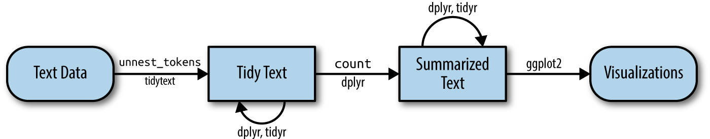
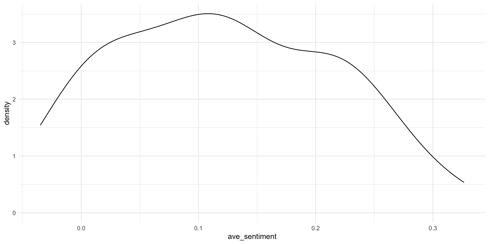

Session 1: Introduction
Who am I?
- Senior Lecturer in Socio-informatics at Stellenbosch University.
- Mixed methods: Qualitative, quantitative, computational, synthesis
- PhD (2019) — media multitasking & attention management
- Information Science and Cognition & Technology Research Group (CTRG)
- Media effects, behaviour, meta-research, methods
Who are you?
- R or Python or… ?
- PhD student, postdoc, faculty?
- Research areas?
- Prior experience with text analysis?
Structure of the workshop
- 09h00 - 11h00: session 1 text analysis fundamentals
- 11h00 - 11h15: break - coffee
- 11h15 - 12h00: session 2 practical exercises
- 12h00 - 13h00: lunch
- 13h00 - 15h00: session 3 topic modeling
- 15h00 - 15h15: break - coffee
- 15h15 - 16h00: session 4 practical exercises
- 16h00 - 16h45: session 6 conclude
Resources (first port of call)
https://www.tidytextmining.com
What is text analysis?
- The process of extracting meaning from text data in some way.
- Label/classify what a document/text is about.
- Classification task
- Substantial emphasis on preprocessing
- Only covering basics in this workshop (text wrangling, dictionary/sentiment analysis, topic modelling)
- More advance topics (e.g., word embeddings, transformers, LLMs, etc.) on your own
Data formats for text analysis
- String: basic character vectors
- Corpus: raw strings annotated with additional metadata
- Document-term matrix (DTM): sparse matrix describing a collection of documents with one row for each document and one column for each term. The value in the matrix is typically word count.
- tidytext…
The tidytext format
Part of the tidyverse approach to data analysis.
- The tidyverse is an opinionated collection of R packages designed for data science. All packages share an underlying design philosophy, grammar, and data structures.
Tidy data characteristics
- each variable is a column
- each observation is a row
- each type of observational unit is its own table
Tidytext format: a table with one token per row
Tidy text analysis
Packages for the first session
Working with text data
text <- c("Because I could not stop for Death -",
"He kindly stopped for me -",
"The Carriage held but just Ourselves -",
"and Immortality")
text_df <- tibble(line = 1:4, text = text)
text_df# A tibble: 4 × 2
line text
<int> <chr>
1 1 Because I could not stop for Death -
2 2 He kindly stopped for me -
3 3 The Carriage held but just Ourselves -
4 4 and Immortality Tokenise the text to start the analysis
Setup data for later examples
# A tibble: 6 × 4
book linenumber chapter word
<fct> <int> <int> <chr>
1 Sense & Sensibility 1 0 sense
2 Sense & Sensibility 1 0 and
3 Sense & Sensibility 1 0 sensibility
4 Sense & Sensibility 3 0 by
5 Sense & Sensibility 3 0 jane
6 Sense & Sensibility 3 0 austen Text preprocessing
Remove punctuation, numbers, symbols, URLs, etc…
- Tokenisation
- Removes whitespace, punctuation (if run using
unnest_tokens) - Splits the text into the unit for analysis (i.e., unigrams)
- Removes whitespace, punctuation (if run using
- (optional) lemmatization
- (optional) stemming
- (optional) Stopword removal
- (optional) tagging (discussed later)
Stop word removal
Stop word removal
# A tibble: 6 × 4
book linenumber chapter word
<fct> <int> <int> <chr>
1 Sense & Sensibility 1 0 sense
2 Sense & Sensibility 1 0 sensibility
3 Sense & Sensibility 3 0 jane
4 Sense & Sensibility 3 0 austen
5 Sense & Sensibility 5 0 1811
6 Sense & Sensibility 10 1 chapter Analysing text data
Finding the most common words in the dataset
Analysing text data
Analyzing word and document frequency: tf-idf
Term frequency-inverse document frequency (TF-IDF) is a metric that weighs the frequency of a term within a particular document (IDF) in relation to its frequency within the entire corpus (TF).
Analyzing word and document frequency: tf-idf
# A tibble: 40,379 × 4
book word n total
<fct> <chr> <int> <int>
1 Mansfield Park the 6206 160460
2 Mansfield Park to 5475 160460
3 Mansfield Park and 5438 160460
4 Emma to 5239 160996
5 Emma the 5201 160996
6 Emma and 4896 160996
7 Mansfield Park of 4778 160460
8 Pride & Prejudice the 4331 122204
9 Emma of 4291 160996
10 Pride & Prejudice to 4162 122204
# ℹ 40,369 more rowsVisualise the output
The bind_tf_idf() function
# A tibble: 40,379 × 7
book word n total tf idf tf_idf
<fct> <chr> <int> <int> <dbl> <dbl> <dbl>
1 Mansfield Park the 6206 160460 0.0387 0 0
2 Mansfield Park to 5475 160460 0.0341 0 0
3 Mansfield Park and 5438 160460 0.0339 0 0
4 Emma to 5239 160996 0.0325 0 0
5 Emma the 5201 160996 0.0323 0 0
6 Emma and 4896 160996 0.0304 0 0
7 Mansfield Park of 4778 160460 0.0298 0 0
8 Pride & Prejudice the 4331 122204 0.0354 0 0
9 Emma of 4291 160996 0.0267 0 0
10 Pride & Prejudice to 4162 122204 0.0341 0 0
# ℹ 40,369 more rowsInspect output
# A tibble: 40,379 × 6
book word n tf idf tf_idf
<fct> <chr> <int> <dbl> <dbl> <dbl>
1 Sense & Sensibility elinor 623 0.00519 1.79 0.00931
2 Sense & Sensibility marianne 492 0.00410 1.79 0.00735
3 Mansfield Park crawford 493 0.00307 1.79 0.00551
4 Pride & Prejudice darcy 373 0.00305 1.79 0.00547
5 Persuasion elliot 254 0.00304 1.79 0.00544
6 Emma emma 786 0.00488 1.10 0.00536
7 Northanger Abbey tilney 196 0.00252 1.79 0.00452
8 Emma weston 389 0.00242 1.79 0.00433
9 Pride & Prejudice bennet 294 0.00241 1.79 0.00431
10 Persuasion wentworth 191 0.00228 1.79 0.00409
# ℹ 40,369 more rowsText classification
- Dictionary-based analyses (identifying keywords)
- Sentiment analysis
- Using predefined lexicons (dictionaries) to classify a text.
- Lexicons for polarity (positive/negative), emotionality, aggression, moral foundations, etc.
- Create your own lexicon…
- Using predefined lexicons (dictionaries) to classify a text.
Beyond bag of words
Valence shifters, word order, parts of speech, sentence structure, slang, and context-specific phrasing…
- Packages
- VADER
- sentimentr
Text classification

Sentiment analysis using the tidytext approach
3 built-in lexicons (can import others and/or create your own)
- AFINN from Finn Årup Nielsen,
- bing from Bing Liu and collaborators, and
- nrc from Saif Mohammad and Peter Turney.
Sentiment analysis with tidytext
nrc_sadness <- get_sentiments("nrc") |>
filter(sentiment == "sadness")
tidy_books |>
filter(book == "Emma") |>
inner_join(nrc_sadness) |>
count(word, sort = TRUE)# A tibble: 341 × 2
word n
<chr> <int>
1 doubt 98
2 ill 72
3 bad 60
4 leave 58
5 mother 57
6 feeling 56
7 impossible 41
8 pain 34
9 evil 33
10 danger 31
# ℹ 331 more rowsHow postive are the books?
jane_austen_sentiment <- tidy_books |>
inner_join(get_sentiments("bing")) |>
count(book, index = linenumber %/% 80, sentiment) |>
pivot_wider(names_from = sentiment, values_from = n, values_fill = 0) |>
mutate(sentiment = positive - negative)
ggplot(jane_austen_sentiment, aes(index, sentiment, fill = book)) +
geom_col(show.legend = FALSE) +
facet_wrap(~book, ncol = 2, scales = "free_x") + theme_bw()How postive are the books?
Sentence level analysis
sentimentr for sentence level sentiment analysis
sentimentr attempts to account for valence shifters (i.e., negators, amplifiers, de-amplifiers, and adversative conjunctions) while maintaining speed.
Setup for sentence-level analysis
sense_and_sensibility <- austen_books() |>
group_by(book) |>
mutate(linenumber = row_number(),
chapter = cumsum(str_detect(text,
regex("^chapter [\\divxlc]",
ignore_case = TRUE)))) |>
ungroup() |>
filter(book == "Sense & Sensibility")
sense_and_sensibility <- sense_and_sensibility |>
group_by(book, chapter) |>
summarise_at(vars(-group_cols()), str_c, collapse=" ")
head(sense_and_sensibility)Setup for sentence-level analysis
# A tibble: 6 × 4
# Groups: book [1]
book chapter text linenumber
<fct> <int> <chr> <chr>
1 Sense & Sensibility 0 "SENSE AND SENSIBILITY by Jane Austen… 1 2 3 4 5…
2 Sense & Sensibility 1 "CHAPTER 1 The family of Dashwood ha… 10 11 12 …
3 Sense & Sensibility 2 "CHAPTER 2 Mrs. John Dashwood now in… 164 165 1…
4 Sense & Sensibility 3 "CHAPTER 3 Mrs. Dashwood remained at… 367 368 3…
5 Sense & Sensibility 4 "CHAPTER 4 \"What a pity it is, Elin… 530 531 5…
6 Sense & Sensibility 5 "CHAPTER 5 No sooner was her answer … 725 726 7…calculate sentence level sentiment using SentimentR
sense_and_sensibility_sentiment <- sense_and_sensibility |>
get_sentences(text) |>
sentiment_by(by = 'chapter',
polarity_dt = lexicon::hash_sentiment_jockers_rinker,
valence_shifters_dt = lexicon::hash_valence_shifters,
amplifier.weight = 2,
n.before = 3, n.after = 3,
question.weight = 0,
neutral.nonverb.like = TRUE)
sense_and_sensibility_sentimentcalculate sentence level sentiment using SentimentR
chapter word_count sd ave_sentiment
1: 0 6 NA 0.326598632
2: 1 1570 0.4077327 0.249731727
3: 2 1969 0.3369039 0.063917232
4: 3 1537 0.3561803 0.215901803
5: 4 1951 0.4045613 0.209411839
6: 5 1029 0.3098563 0.144030914
7: 6 1352 0.3477250 0.256133751
8: 7 1287 0.4048185 0.280735317
9: 8 1255 0.3362009 -0.022161237
10: 9 1862 0.3583314 0.149243571
11: 10 2056 0.4441462 0.246235056
12: 11 1436 0.4452147 0.218997665
13: 12 1679 0.2825503 0.075124846
14: 13 2108 0.2953268 0.023990428
15: 14 1507 0.3509688 0.083718513
16: 15 2523 0.3559485 -0.034875127
17: 16 1982 0.3231445 0.004442358
18: 17 1630 0.3262953 0.113815528
19: 18 1519 0.4766527 0.032828379
20: 19 2940 0.3453166 0.150385953
21: 20 2455 0.4663016 0.141408439
22: 21 2945 0.4170187 0.108697492
23: 22 2840 0.3474119 0.106145243
24: 23 2391 0.4152438 0.094325272
25: 24 2116 0.3711077 0.026704375
26: 25 1940 0.3512579 0.133368602
27: 26 2535 0.3280331 0.074196841
28: 27 2487 0.4182183 0.053063819
29: 28 1449 0.4678384 -0.016472587
30: 29 3841 0.3842632 -0.023493280
31: 30 3095 0.3847350 0.050016778
32: 31 3809 0.4918892 0.095490847
33: 32 2600 0.4495781 0.001723829
34: 33 3066 0.4930980 0.239571958
35: 34 2641 0.4244770 0.215540125
36: 35 2346 0.4341750 0.106206202
37: 36 3103 0.3506201 0.198692242
38: 37 4501 0.3741613 0.035510717
39: 38 3170 0.3873457 0.148834960
40: 39 1996 0.4137419 0.160351066
41: 40 2638 0.4920137 0.209554184
42: 41 2632 0.4264903 0.128297730
43: 42 1809 0.4401833 0.282213546
44: 43 3404 0.4351990 0.009400588
45: 44 5522 0.3811692 0.015758370
46: 45 2116 0.4319751 0.202423676
47: 46 2887 0.4180017 0.188952169
48: 47 2345 0.4183300 0.091888848
49: 48 1302 0.2466289 0.018697619
50: 49 4245 0.3590368 0.128165406
51: 50 2484 0.4204863 0.225233760
chapter word_count sd ave_sentimentPlot the output
Rescale the sentiment scores
Rescale the sentiment scores
Thresholds
- positive sentiment: sentiment >= 0.05
- neutral sentiment: (sentiment > -0.05) and (sentiment < 0.05)
- negative sentiment: sentiment <= -0.05
Bring back the rest of the data
Bring back the rest of the data
Rows: 51
Columns: 7
$ chapter <fct> 0, 1, 2, 3, 4, 5, 6, 7, 8, 9, 10, 11, 12, 13, 14, 15, 16…
$ word_count <int> 6, 1570, 1969, 1537, 1951, 1029, 1352, 1287, 1255, 1862,…
$ sd <dbl> NA, 0.4077327, 0.3369039, 0.3561803, 0.4045613, 0.309856…
$ ave_sentiment <dbl> 1.00000000, 0.76487948, 0.19651005, 0.66140050, 0.641549…
$ book <fct> Sense & Sensibility, Sense & Sensibility, Sense & Sensib…
$ text <chr> "SENSE AND SENSIBILITY by Jane Austen (1811) ", "CH…
$ linenumber <chr> "1 2 3 4 5 6 7 8 9", "10 11 12 13 14 15 16 17 18 19 20 2…Plot sentiment
color <- ifelse(sense_and_sensibility_sentiment$ave_sentiment < 0, "pink", "lightblue")
sense_and_sensibility_sentiment |>
group_by(chapter) |>
ggplot(aes(x = fct_reorder(chapter, ave_sentiment), y = ave_sentiment)) +
geom_hline(yintercept=0, linetype=4)+
geom_col(fill = color) +
labs(x = "Chapter", y = "Sentiment", title = "Sentiment", subtitle = "By chapter")+
coord_flip()+
theme_minimal() +
theme(
panel.grid.major.x = element_blank(),
panel.grid.minor.x = element_blank()
)Plot sentiment
Concluding thoughts on dictionary/sentiment analysis
- many other techniques to generalise from these basics
- use the sentiment scores in your models
- classify more than just positive/negative… civility, aggressiveness, anger, abusive language, etc.
- limitations: often less effective with short text